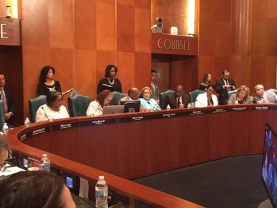
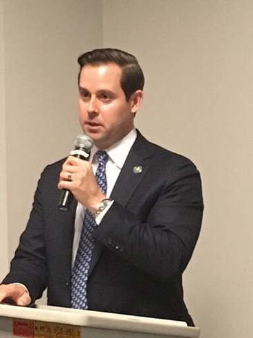
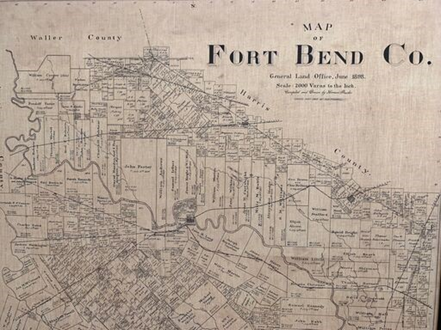
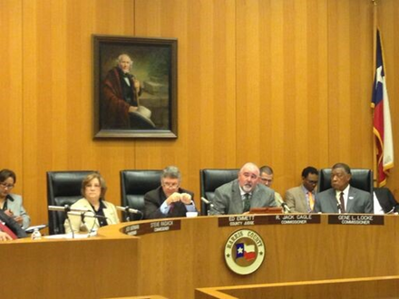

Module 11 Local County Governments
Local Government in Texas
Local Government in Texas
Chapter Learning Objective
By the end of this chapter, you will be able to:
- Describe the roles and responsibilities of local political systems in Texas
Introduction
Voters in Texas have leaned conservative throughout the state’s history, albeit with a bit of a progressive streak. Even as the nature of the Republican and Democratic parties have changed, the basic ideology of Texas voters has been fairly reliable.
One major change, though, has been the geographic distribution of liberals and conservatives. In recent elections, urban areas have grown increasingly liberal as rural areas have grown more conservative. This has created an interesting conflict with respect to the nature of local governments in Texas. Conservative lawmakers have historically supported the concept of local control, letting local governments – especially cities – conduct their business as they please, relying on local voters to keep regulatory overreach in check.
More liberal urban voters, though, have shown a higher level of comfort with government regulation and authority that conservative voters generally oppose. Austin, arguably the most liberal of Texas cities, has enacted ordinances banning grocery stores from offering plastic bags to customers, placing red-light cameras at intersections to automatically ticket drivers who fail to come to a complete stop before making a right turn - even requiring apartment properties to participate in voluntary federal low-income housing programs
The San Antonio City Council, meanwhile, refused to allow Chick-fil-A restaurants in the city’s airport because of the company’s financial support of organizations like the Salvation Army and the Fellowship of Christian Athletes, which city leaders felt were insufficiently supportive of gay and lesbian issues.
Figure 6.1 Chick-fil-A restaurant located at the Tech Ridge shopping center in Austin, Texas. Image credit: Wild Bill, License: CC BY SA
In 2019, the Texas Legislature passed a number of bills to reign in local government policies it deemed out of control. Red-light cameras were banned statewide. A “Save Chick-fil-A bill” prohibiting cities from refusing to do business with companies that partner with religious groups was enacted. A bill prohibiting new partnerships between cities and abortion providers was also signed into law. As the demographics and politics of Texas change, how will future legislators expand or contract the powers of local governments?
Local Government in Texas
Understanding government in Texas is impossible without a study of local governments. Texas has one state government, which operates under the authority of one federal government. Under that umbrella, however, are 254 counties, 1214 cities, 1079 independent school districts and 2600 special purpose districts that cover everything from rural fire prevention to mosquito control.
Let’s take a look at the types of local government in Texas.
License and Attribution
CC LICENSED CONTENT, ORIGINAL
Local Government in Texas: Introduction. Authored by: Andrew Teas. License: CC BY: Attribution
The Relationship Between Local, State, and National Government
Learning Objectives
By the end of this section, you will be able to:
- Explain the relationship between the local government, state government, and national government
Introduction
This section explores the interrelationship between local, state, and national government.
The Relationship Between Local, State, and National Government
Figure 6.2 County, state, and U.S. flags at Kaufman County Veterans’ Memorial Park. Image Credit: pxhere License: CC0
Whereas the federal government and state governments share power in countless ways, a local government must be granted power by the state. The way power is granted and limited is different for different types of local government.
Counties are general-law forms of government, created specifically by the state. Geographically, counties are like puzzle pieces - every square inch of Texas is in one of the state’s 254 counties. Counties are given specific powers by the state under the Constitution and state statutes and have virtually no flexibility.
Cities, on the other hand, are created by their citizens, who apply for a charter to create one. Most of Texas does not lie within the city limits of any city. While small cities operate much like counties, with specific powers granted and limited by the state, larger “home rule” cities have tremendous flexibility. Cities like Austin have passed ordinances expanding the concept of a municipal government into social justice and environmental regulation areas that have prompted the state legislature to begin limiting the powers of home rule cities.
“Preemption” laws - state laws limiting the powers of local governments - are controversial. Conservatives comprise the majority of both chambers of the state legislature and historically favor the concept of local control. As voters in many urban areas trend more progressive, favoring social justice and environmental regulations beyond those favored by state lawmakers, the concept of local control begins to clash with the legislature’s basic ideological standards.
Cities sometimes derive power and funding directly from the federal government. Most large Texas cities have been granted “substantial equivalency” by the U.S. Department of Housing and Urban Development, meaning the city’s Fair Housing ordinance is basically the same as the national law. Those cities are empowered to an extent to enforce the Federal Fair Housing Act on the federal government’s behalf.
Licenses and Attributions
CC LICENSED CONTENT, ORIGINAL
Revision and Adaptation. Authored by: Kris S. Seago. License: CC BY: Attribution
Special Districts in Texas
Learning Objectives
By the end of this section, you will be able to:
- Explain the structure and function of special districts in Texas
Introduction
“In general, most citizens know comparatively little about the jurisdiction, structure, functions, and governance of special purpose districts, thus making them the invisible government of Texas.”
Texans seem to love special purpose districts. As of 2014, Texas has approximately 3,350 of them, and the number increases every year. There are far more special purpose districts in Texas than cities and counties combined, yet most Texans know almost nothing about their function, structure, or governance.
Special Districts in Texas
Special purpose districts are governmental entities with specific geographic boundaries that are created to provide specific services such as drainage, water and sewer service, or firefighting. Districts can be created by the Texas Legislature, by local governmental bodies, or sometimes by a state agency.
Districts are controlled by a board of directors, sometimes elected by voters but sometimes appointed by the legislature or the governing body of a local city or county. If you are taking this class from a community college, your college is a special- purpose district – a community college district created by the state legislature and funded mostly by an ad valorem tax levied on property within the district boundaries.
Let’s look at some of the different types of special districts in Texas.
School Districts
The most common district in Texas is an independent school district. Texas has 1,031 school districts, which manage 9,317 public schools serving over five million kindergarten through 12th-grade students. The number of school districts has declined in recent years as some rural districts have consolidated as student populations dwindle.
School districts generally levy a higher property tax rate than any other jurisdiction. The Katy Independent School District has a property tax rate of $1.52 per $100 of property value, more than three times the $0.49 rate of the City of Katy. Despite the cost to taxpayers and overall importance of their mission, school district trustees often receive less attention from voters and the press than city council members.
A school district is governed by a board of trustees, elected in a non-partisan election – generally in May of odd-numbered years. Elected school trustees are volunteers, receiving no salary for their services. They hire a superintendent to run the day-to-day operations of the school district. The board of trustees sets the district property tax rate, approves the salary schedule for teachers and staff, and approve contracts for the construction and maintenance of school facilities and equipment. School districts are also transportation and food-service providers – often massive ones. The Houston Independent School District serves more than 269,000 meals and transports approximately 36,000 students to and from school on a fleet of nearly 1000 buses every school day.
Community College Districts
Texas has 50 community college districts, serving more than 700,000 students. Chosen by voters in non-partisan elections, community college district boards of trustees serve the same role as school district trustees for their colleges, setting the tax rate, salary schedules, and approving contracts for facilities, equipment and other needs. Community college boards hire a chancellor to run the district’s day-to-day operations.
Municipal Utility Districts
When developers create a new residential subdivision, generally outside the city limits of a nearby municipality, on previously rural land, how do those new homes get water and sewer service? Texas has long utilized the municipal utility district (MUD) to create that critical infrastructure. A MUD can be created by the legislature or by the Texas Commission on Environmental Quality with specific geographic boundaries.
Once established, the residents of the district (sometimes a few development company employees moved into trailers specifically to be voters) vote to authorize the district to sell bonds – borrowing money from bondholders, who are paid back later with interest. The district uses the money raised from selling bonds to build a water and sewer system for the new subdivision. Homeowners then pay a property tax, as well as water and sewer rates for the water they use, to the district, which used that money to repay the bonds.
Hospital Districts
Indigent health care in Texas is left largely to county governments, which are often ill-equipped to deal with this complex task. Some counties have formed hospital districts to collect a property tax and provide health services. The Harris County Hospital District (now called simply Harris Health) collects a property tax of $0.17 per $100 of property valuation. With the $717 million that tax raised in 2018, Harris Health handled more than 161,000 emergency room visits and more than 1.7 million outpatient clinic visits. Hospital districts are run by boards of trustees, with members appointed by county commissioners’ courts.
Other Districts
In addition to the four categories of districts discussed above, Texas has dozens of other types of special-purpose districts from rural fire prevention districts, which provide fire protection services, to mosquito control districts that test for evidence of mosquito-borne diseases and spray insecticide.
One interesting type of district is the Tax Increment Reinvestment Zone (TIRZ). A TIRZ can be created by the legislature or by a local jurisdiction and is a tool to jumpstart the improvement and redevelopment of a troubled area.
The taxable value of commercial property in a TIRZ is “frozen” at a certain point in time, with the city – sometimes in partnership with other taxing jurisdictions – continues to collect taxes as if the value of property within the zone doesn’t change. If redevelopment efforts are successful in improving the area and raising property values, the TIRZ keeps the increment between what the city collects and what the city would have collected had the property value increase been applied, with that money being used to finance further improvements in the area – new and improved streets, parks, better drainage, even additional police patrols.
To a city, in theory at least, they would likely have never collected that increment anyway, since property values in blighted areas tend to be stagnant. When the TIRZ expires, however, the city realizes a windfall of additional tax revenue, as well as an area with better infrastructure and a healthier business and residential climate. TIRZ board members are appointed by the governing body of the city that includes the TIRZ.
LICENSES AND ATTRIBUTIONS
CC LICENSED CONTENT, ORIGINAL
Special Districts in Texas. Authored by: Andrew Teas. License: CC BY: Attribution
Municipal (City) Government
Learning Objective
By the end of this section, you will be able to:
- Explain the structure and function of municipal government in Texas
###Introduction
This section discusses the structure and function of municipal government in Texas.
General Law and Home Rule Cities
While every square inch of Texas is included in one of its 254 counties, not all of Texas falls inside the limits of a city. Cities are created by its citizens, who are granted a charter by the state of Texas in the same way a corporation operates under a state charter.
Cities can be organized in two basic ways, depending on their size. Cities with a population of less than 5000 people can only exist as general law cities. A general law city has only the powers specifically granted by the legislature, which do not include broad annexation or regulatory powers. Cities with a population greater than 5000 may elect home rule status. Home rule cities can do virtually anything they want that isn’t prohibited by the legislature – leading to some of the issues discussed at the beginning of this chapter.
Larger cities (those exceeding 225,000) have a unique authority: that of “limited annexation”, whereby an adjoining area may be annexed for purposes of imposing city ordinances related to safety and building codes. The residents can vote for mayor and council races but cannot vote in bond elections (and, consequently, the city cannot directly collect city sales tax from businesses or city property tax from owners).
The City of Houston has exploited a provision in the state law that allows it to share in sales tax revenues along with special districts (municipal utility districts, for instance) that cross an area “annexed for limited purposes.” This has led to a spiderwebbing known as limited purpose or special purpose annexations that consist of mostly commercial properties facing major streets. These extend through otherwise unincorporated areas in what is known as the city’s extraterritorial jurisdiction (ETJ), which, for Houston, extends five miles beyond its city limits. This has led to conflicts between city and county officials over the provision of services to these areas not included in the agreements.
The purpose of limited annexation is to allow the city to control development in an area that it eventually will fully annex; it is meant to do so within three years (though it can arrange “non-annexation agreements” with local property owners), and those agreements with municipal utility districts also cloud the picture. During each of the three years, the city is to develop land-use planning for the area (zoning, for example), identify needed capital improvements and ongoing projects, and identify the financing for such as well as to provide essential municipal services.
Municipal elections in Texas are nonpartisan in the sense that candidates do not appear on the ballot on party lines, and do not run as party tickets. However, a candidate’s party affiliation is usually known or can be discerned with minimal effort (as the candidate most likely has supported other candidates on partisan tickets). In some instances, an informal citizen’s group will support a slate of candidates that it desires to see elected (often in opposition to an incumbent group with which it disagreed on an issue). However, each candidate must be voted on individually.
Governance
 Figure 6.3 Mayor Sylvester Turner presided over this Houston City Council meeting in 2019. Image Credit: Andrew Teas, License: CC BY
Who runs city government?
Cities in Texas can be organized in a variety of ways. The most common structure is the council-manager form of government. Citizens in San Antonio decided long ago that the political skill set required to be elected mayor of the city was not necessarily the skill set required to manage the day-to-day operations of a municipal water and sewer system with more than 12,000 miles of pipe – enough to stretch from Texas to Australia. While the mayor of San Antonio presides over council meetings, the daily operations of city government are overseen by a professional city manager, who is hired by the city council for that purpose. Most major Texas cities, including Austin, Galveston, Dallas, and Fort Worth, use a council-manager form of government.
 Figure 6.4 Unlike most cities, Houston has an independently-elected chief financial officer - currently Chris Brown, speaking here to a Houston business group in 2018. Image Credit: Andrew Teas, License: CC BY.
Houston, on the other hand, uses a strong-mayor form of government. The mayor of Houston not only presides over city council meetings, but is also the city’s chief executive officer. Houston’s strong-mayor system is considered especially strong since Houston mayors also have unilateral control over the city council agenda. On the other hand, Houston has a unique counterbalance in the form of an independently-elected city controller, a chief financial officer who must concur in all city expenditures and bond issues, and who can conduct independent audits of city departments.
Some cities elect all their council member-at-large, meaning any qualified person who lives in the city can run for any position. Other cities have adopted single-member districts to ensure that every part of town has a council member looking after the needs of its residents. At-large systems are frequently criticized for making it difficult for members of racial minority groups to be elected. Single-member district systems are criticized for creating a “turf” mentality that places parts of town in competition with each other for parks and libraries, removing the political incentive for council members to consider the needs of the city as a whole. Houston has a mixed system, with five members elected at large, eleven from single-member districts.
Licenses and Attributions
CC LICENSED CONTENT, ORIGINAL
Municipal (City) Government in Texas. Authored by: Andrew Teas. License: CC BY: Attribution
County Governments in Texas
Learning Objective
By the end of this section, you will be able to:
- Explain the structure and function of county government in Texas
Introduction
This section discusses the structure and function of Texas’ 254 county governments.
###County Governments in Texas
Texas has a total of 254 counties, by far the largest number of counties of any state. Under Spanish and, later, Mexican rule, Texas was divided into municipios, which, despite sharing a name origin with municipalities, were more like the counties of today – large districts containing one or more settlements and the surrounding rural land.
When Texas became a Republic in 1836, the 23 municipios became counties, with a structure that changed only slightly before, during, and after the Civil War. By 1870, Texas had 129 counties, and the Constitution of 1876, still in place today, went into significant detail about their formation and operation.
 Figure 6.5 Fort Bend County was created as part of the Republic of Texas in 1837. This 1898 map shows many of the original land grants. Image Credit: Andrew Teas, Licsense: CC BY
The last new county to be established was Loving County in 1931. More on Loving County later…
The structure of county government in Texas is defined in the Constitution, so it’s not surprising that the form closely follows the plural-executive model of state government.
 Figure 6.6 This Harris County Commissioners Court meeting in 2018 was chaired by former Harris County Judge Ed Emmett. Image Credit: Andrew Teas, License: CC BY
Each Texas county is run in part by a five-member commissioners’ court consisting of a county judge, elected at-large, and four county commissioners elected from each of four precincts. Many county functions are run by independently elected officials, who answer directly to the voters, rather than to commissioners’ court. While county commissioners have authority over each official’s budget, they have little to say about the day-to-day administration of county offices. In most counties, these independently-elected officials include the county sheriff, the county attorney, the district attorney, the county clerk, the district clerk, the county treasurer, and the county tax assessor-collector as well as a number of judges that varies widely with the population of the county.
County Judge
While a county judge, particularly in rural counties, does have a judicial function, a county judge in Texas is primarily the chair of the county commissioners’ court. He also plays an important role as head of the county’s emergency management functions.
County Commissioner
County commissioners in Texas are incredibly powerful, especially in large counties. Not only do they vote on countywide issues as part of commissioners’ court, they have almost unliateral control over the planning and constructions of roads, bridges and parks within their precinct, which is one-fourth of the county (by population).
County Sheriff
The sheriff is the county’s chief law enforcement officer. He also manages the county jail and provides security for the county courts.
County Attorney
The County Attorney is the county’s lawyer, providing legal advice and representing the county and its officials in all civil cases. This can present an interesting dilemma, since county officials are all independently elected. Sometimes a county official and the lawyer official representing him may be political opponents. The county attorney also pursues civil enforcement actions on behalf of the county.
District Attorney
The district attorney is the state’s prosecutor, representing the government in criminal cases in that county’s state district courts.
County Clerk
The county clerk is the county’s custodian of records and documents, in charge of public records such as bonds, birth and death certificates, marriage licenses. The county clerk is also the chief election officer in most counties, administering elections and counting the votes.
District Clerk
The district clerk is the recordkeeper for all records pertaining to the state district courts in that county. He coordinates the jury selection process and manages court registry funds.
County Treasurer
The county treasurer is the county’s banker - receiving and depositing all county revenues, preparing the county payroll ad recording all county expenditures and receipts.
County Tax Assessor-Collector
Part of the county tax assessor-collector title is somewhat misleading - all tax “assessment” is now done by appraisal districts. The “collector” part still applies, however. In addition to collecting all county property taxes, the county tax assessor-collector usually collects property taxes for other taxing jurisdictions within the county, such as school districts and cities. He also issues license plates and registration stickers, and handles voter registration.
County officials are elected in partisan elections, and commissioner precincts are redrawn every ten years following the census to roughly equalize the population of each. Unlike other states, Texas does not allow for consolidated city-county governments. Cities and counties (as well as other political entities) are permitted to enter “interlocal agreements” to share services (for instance, a city and a school district may enter into agreements with the county whereby the county bills for and collects property taxes for the city and school district; thus, only one tax bill is sent instead of three). Texas does allow municipalities to merge, but populous Harris County, Texas consolidating with its primary city, Houston, Texas, to form the nation’s second-largest city (after New York City) is not a prospect under current law.
Unlike cities, which can receive sales tax revenue, counties are funded almost entirely with property taxes. Counties in Texas are general-law units of government, with limited regulatory powers. In most counties, this doesn’t present a major problem. Populated areas are generally incorporated as cities, which have more extensive regulatory authority. Unincorporated areas – those areas outside the city limits of any city – have historically been rural areas with less need for regulation. Harris County, however, has become an important exception. Harris County’s population is nearly 5 million people as of 2019, with more than 2 million in the unincorporated area. If the unincorporated part of Harris County were a city, it would be the fifth-largest city in the United States. Fourteen states have fewer residents than the unincorporated part of Harris County, which has no building code and limited land use regulation.
Meanwhile, in West Texas, Loving County has the exact same governance structure to administer a county with an estimated population of 152 – from which voters must choose at least a dozen elected county officials.
Harris County sums up some of its challenges in its annual budget report:
Harris County government provides services to all of the residents of the county. Most of the higher cost county functions including the courts system, Hospital District, county jail, and most of the county administrative functions are located within the City of Houston. County government is the primary provider of roads, parks, facilities, and law enforcement for the unincorporated areas.
Harris County funds the county-wide and unincorporated area services primarily with property tax revenue. Despite the significant size and population of the unincorporated area, the county does not receive sales tax revenue to help fund services. The unique, ongoing challenge for Harris County government is to meet the needs of this rapidly growing unincorporated area without the funding sources provided to large cities in Texas. Most of the growth in expenditures in the County General Fund during this period has been for county-wide functions including law enforcement, the administration of justice, managing the jails, and the growing cost of indigent healthcare. As the population continues to grow, the demand for services, new roads, and expanded facilities in the unincorporated areas of the county will increase.
Texas counties are prone to inefficient operations and are vulnerable to corruption, for several reasons. First, most of them do not have a merit system but operate on a spoils system, so that many county employees obtain their positions through loyalty to a particular political party and commissioner rather than whether they actually have the skills and experience appropriate to their positions. Second, most counties have not centralized purchasing into a single procurement department which would be able to seek quantity discounts and carefully scrutinize bids and contract awards for unusual patterns. Third, in 90 percent of Texas counties, each commissioner is individually responsible for planning and executing their own road construction and maintenance program for their own precinct, which can result in poor coordination and duplicate construction machinery.
Licenses and Attributions
CC LICENSED CONTENT, ORIGINAL
County Government in Texas. Authored by: Andrew Teas. License: CC BY: Attribution
Glossary
at-large election: an election in which officials are selected by voters of the entire geographical area, rather than from smaller districts within that area
county clerks: public official who is the main record-keeper of the county
county commissioner: government official (four per county) on the county commissioners’ court whose main duty is the construction and maintenance of roads and bridges
county commissioners’ court: the main governing body of each county; has the authority to set the county tax rate and budget.
county tax assessor-collector: public official who maintains the county tax records and collects taxes owed to the county
district attorney: public official who prosecutes the more serious criminal cases in the district court
home-rule charters: the rules under which a city operates; local governments have considerable independent governing power under these charters
municipal utility district (MUD): a special district that offers services such as electricity water, sewage, and sanitation outside the city limits
school district: a specific type of special district that provides public education in a designated area
special district: a unit of local government that performs a single service, such as education or sanitation, within a limited geographic area
Licenses and Attributions
CC LICENSED CONTENT, ORIGINAL
Local Government in Texas: Glossary. Authored by: Andrew Teas. License: CC BY: Attribution
Assessment
Check your knowledge of this Chapter by taking the practice ungraded quiz linked below.
Ungraded optional practice Quiz